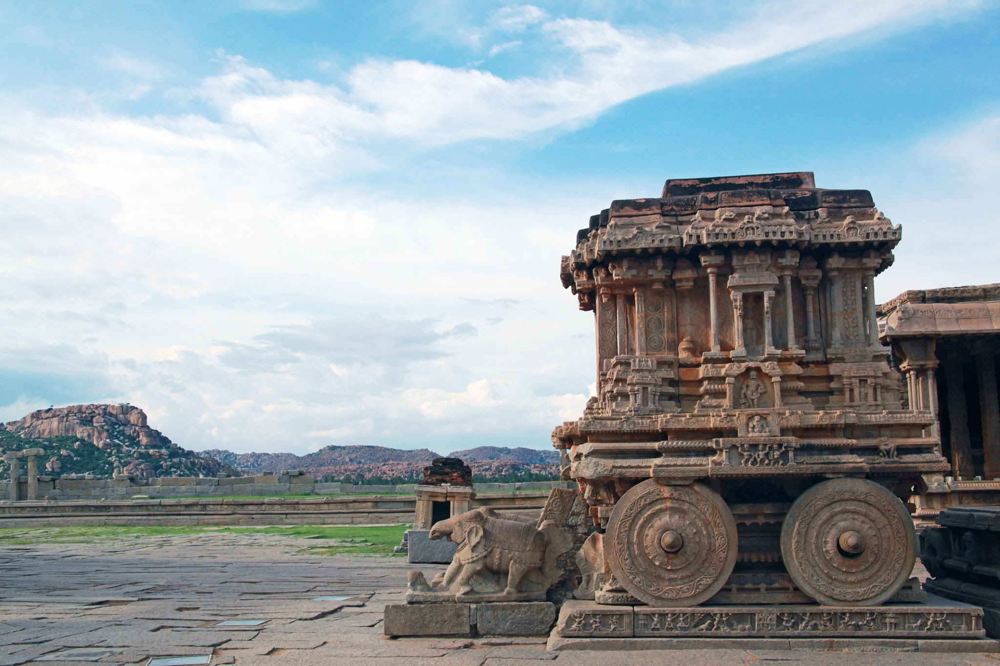

üòçÔ∏èHampiüòçÔ∏è
- lies in the Deccan heartland in the state of Karnataka or Karu’nadu (meaning 'elevated land').
- The ruins of Hampi are scattered through out an area of 26 sq. km area, amidst giant boulders and vegetation.
- Protected by the tempestuous river Tungabhadra in the north and rocky granite ridges on the other three sides, the ruins narrate silenty the story of grandeur splendor and fabulous wealth.
- The splendid remains of palaces and gateways of the broken city tells a tale of man's infinite talent and power of creativity together with his capacity for senseless destruction.
- The genesis of the place, known today as Hampi, dates back to the age of the Hindu epic 'Ramayana' when it was the site of Kishkinda, a monkey kingdom.
- Between the 9th and 10th century, this area was known as Vijaypur and later in 1150 AD as Vijaynagar under the king Vijayadhawaja.